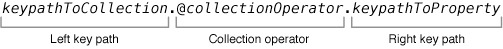

KVC和KVO
@[iOS, Study]
###概述
KVC是一种通过字符串名称间接访问对象属性的方法。其方法在NSKeyValueCoding中被声明，默认的实现方法由NSObject提供。非对象参数和返回类型会被识别自动封装、解封。
通过KVC这种间接访问方法，开发者就能在运行时确定属性的绑定，而不是在编译时。
###键和键路径
- key： 键是一个标识了对象某个属性的字符串。通常在接收的对象中，一个键对应的是一个访问方法或者实例变量的名称。
注意： 键必须是ASCII码，以小写字母开头，并且无空格。
- keyPath： 键路径由一个或多个键组成，以点做分隔符，用于指定一个对象属性遍历序列。
注意：Objective-c中的点语法是调用属性的存取方法，而键路径中的点是用以界定元素。
###使用KVC
####获取值
+(id)valueForKey:(NSString *)key
-(id)valueForKeyPath:(NSString *)keyPath
-(id)valueForUndefinedKey:(NSString *)key
当键没有对应的存取器或者实例变量的时候，接收对象会向自己发送valueForUndefinedKey：这个消息，它的默认实现是抛出异常NSUndefinedKeyException，可以重写这个函数做错误处理。
####修改值
+(void)setValue:(id)anObject forKey:(NSString *)key
-(void)setValue:(id)value forKeyPath:(NSString *)keyPath
-(void)setValue:(id)value forUndefinedKey:(NSString *)key
-(void)setNilValueForKey:(NSString *)key
当对非类对象属性设置nil时被调用，默认抛出异常。
####一对多关系成员的情况
有序一对多关系成员 NSArray
- -(NSMutableArray )mutableArrayValueForKey:(NSString )key
- -(NSMutableArray )mutableArrayValueForKeyPath:(NSString )keyPath
无序一对多关系成员 NSSet
- -(NSMutableSet )mutableSetValueForKey:(NSString )key
- -(NSMutableSet )mutableSetValueForKeyPath:(NSString )keyPath
###存取方法
为了在调用valueForKey:，setValue:forKey:，mutableArrayValueForKey:和mutableSetValueForKey:时确定存取方法的位置，就必须实现如下的方法。
####valueForKey:
为了返回一个键的对应值，就需要实现-<key>方法。而-is<key>能够支持Boolean类型的属性，例如：
|
|
####setValue:forKey:
需要实现set<Key>:方法：
|
|
如果属性是一个非对象类型，还必须要重写-setNilValueForKey:来处理对该属性设置nil值：
|
|
####有序集合
对于不可改变的有序集合，需要实现如下方法：
-countOf<Key>必须实现， 类似于 NSArray 的count方法，返回一对多关系中对象的数量。-objectIn<Key>AtIndex:或者-<key>AtIndexes:二者其中之一必须实现. 它对应于 NSArrayobjectAtIndex:和objectsAtIndexes:方法。-get<Key>:range:可选方法, 它对应于 NSArray 的getObjects:range:方法。
|
|
####mutableArrayValueForKey:
对于可改变的有序集合还需要实现一些额外的方法：
-insertObject:in<Key>AtIndex:或者-insert<Key>:atIndexes:二者之一必须被实现。类似于NSMutableArrayinsertObject:atIndex:和-insertObjects:atIndexes:。-removeObjectFrom<Key>AtIndex:或者remove<Key>AtIndexes:二者之一必须被实现。类似于 NSMutableArrayremoveObjectAtIndex:和removeObjectsAtIndexes:。-replaceObjectIn<Key>AtIndex:withObject:或者-replace<Key>AtIndexes:with<Key>:可选方法 。
|
|
####无序集合
对于不可改变的无序集合，需要实现如下方法：
-countOf<Key>必须实现， 类似于 NSSet 的count方法。-enumeratorOf<Key>必须实现 ，类似于NSSet的objectEnumerator方法。-memberOf<Key>必须实现, 它等价于 NSSet 的member方法。
|
|
####mutableSetValueForKey:
对于可改变的无序集合还需要实现一些额外的方法：
-add<Key>Object:或者-add<Key>:二者之一必须被实现。类似于NSMutableSet的addObject:方法。-remove<Key>Object:或者-remove<Key>:二者之一必须被实现。类似于 NSMutableArrayremove<Key>:方法 。-intersect<Key>:可选方法 。
|
|
###KVC的实现
setValue:forKey的搜索方式
首先搜索
set<Key>:方法上面的setter方法没有找到，如果类方法accessInstanceVariablesDirectly返回YES，那么按
_<key>，_is<Key>，<key>，is<key>的顺序搜索成员名。
注：这是NSKeyValueCodingCatogery中实现的类方法，默认实现为返回YES。
- 如果找到设置成员的值，如果没有调用
setValue:forUndefinedKey:。
####valueForKey:的搜索方式
首先按
get<Key>、<key>、is<Key>的顺序查找getter方法，找到直接调用。如果是bool、int等内建值类型，会做NSNumber的转换。上面的getter没有找到，查找
countOf<Key>、objectIn<Key>AtIndex:、<Key>AtIndexes格式的方法。
如果countOf<Key>和另外两个方法中的一个找到，那么就会返回一个可以响应NSArray所有方法的代理集合。发送给这个代理集合的NSArray消息方法，就会以countOf<Key>、objectIn<Key>AtIndex:、<Key>AtIndexes这几个方法组合的形式调用。还有一个可选的get<Key>:range:方法。
- 还没查到，那么查找
countOf<Key>、enumeratorOf<Key>、memberOf<Key>:格式的方法。
如果这三个方法都找到，那么就返回一个可以响应NSSet所有方法的代理集合。发送给这个代理集合的NSSet消息方法，就会以countOf<Key>、enumeratorOf<Key>、memberOf<Key>:组合的形式调用。
还是没查到，那么如果类方法accessInstanceVariablesDirectly返回YES，那么按
_<key>，_is<Key>，<key>，is<key>的顺序直接搜索成员名。再没查到，调用
valueForUndefinedKey:。
####mutableArrayValueForKey:的搜索方式
- 搜索
insertObject:in<Key>AtIndex:、removeObjectFrom<Key>AtIndex:或者insert<Key>:atIndexes、remove<Key>AtIndexes:格式的方法。
如果至少一个insert方法和至少一个remove方法找到，那么同样返回一个可以响应NSMutableArray所有方法的代理集合。那么发送给这个代理集合的NSMutableArray消息方法，以insertObject:in<Key>AtIndex:、removeObjectFrom<Key>AtIndex:、insert<Key>:atIndexes、remove<Key>AtIndexes:组合的形式调用。还有两个可选实现的接口：replaceObjectIn<Key>AtIndex:withObject:、replace<Key>AtIndexes:with<Key>:。
- 否则，搜索
set<Key>:格式的方法，如果找到，那么发送给代理集合的NSMutableArray最终都会调用set<Key>:方法。
也就是说，mutableArrayValueForKey取出的代理集合修改后，用set<Key>:重新赋值回去。这样做效率会差很多，所以推荐实现上面的方法。
否则，那么如果类方法accessInstanceVariablesDirectly返回YES，那么按
_<key>，<key>的顺序直接搜索成员名。如果找到，那么发送的NSMutableArray消息方法直接转交给这个成员处理。再找不到，调用
setValue:forUndefinedKey:。
####mutableSetValueForKey:的搜索方式
搜索
add<Key>Object:、remove<Key>Object:或者add<Key>:、remove<Key>:格式的方法，如果至少一个insert方法和至少一个remove方法找到，那么返回一个可以响应NSMutableSet所有方法的代理集合。那么发送给这个代理集合的NSMutableSet消息方法，以add<Key>Object:、remove<Key>Object:、add<Key>:、remove<Key>:组合的形式调用。还有两个可选实现的接口：intersect<Key>、set<Key>:。如果reciever是ManagedObejct，那么就不会继续搜索了。
否则，搜索
set<Key>:格式的方法，如果找到，那么发送给代理集合的NSMutableSet最终都会调用set<Key>:方法。也就是说，mutableSetValueForKey取出的代理集合修改后，用set<Key>:重新赋值回去。这样做效率会差很多，所以推荐实现上面的方法。否则，那么如果类方法accessInstanceVariablesDirectly返回YES，那么按
_<key>，<key>的顺序直接搜索成员名。如果找到，那么发送的NSMutableSet消息方法直接转交给这个成员处理。再找不到，调用
setValue:forUndefinedKey:。
###核查值的正确性
KVC提供属性值确认的API，它可以用来检查set的值是否正确、为不正确的值做一个替换值或者拒绝设置新值并返回错误原因，格式为：validate<Key>:error:。
|
|
validateValue:forKey:error:，默认实现会搜索 validate<Key>:error:格式的核查方法，找到则调用，未找到默认返回YES。
注意其中的内存管理问题。
###集合操作
集合操作通过对valueForKeyPath:传递参数来使用，一定要用在集合(如：array)上，否则产生运行时刻错误。其格式如下：

Left key path部分：如果存在，那则为需要操作对象路径。
Collectionoperator部分：通过@符号确定使用的集合操作。
Rightkey path部分：需要进行集合操作的属性。
####数据操作
@avg 平均值
@count 总数
@max 最大
@min 最小
@sum 总数
确保操作的属性为数字类型，否则运行时刻错误。
####对象操作
针对数组的情况
@distinctUnionOfObjects 返回指定属性去重后的值的数组
@unionOfObjects 返回指定属性的值的数组，不去重
属性的值不能为空，否则产生异常。
数组操作
针对数组的数组情况
@distinctUnionOfArrays 返回指定属性去重后的值的数组
@unionOfArrays 返回指定属性的值的数组，不去重
@distinctUnionOfSets 同上，只是返回值为NSSet
###KVO
KVO键值观察是就对象属性变化透明地通知观察者的一种机制。
用法比较简单
- 注册观察者
|
|
- 移除观察者
|
|
- 回调
|
|
其中参数含义：
| 参数 | 类型 | 含义 |
|---|---|---|
| observer | NSObject | 观察者 |
| keyPath | NSString | 观察的键路径 |
| options | NSKeyValueObservingOptions | 设置观察什么类型的变化 |
| context | void | 可以用来传递一些参数 |
| object | id | 被观察的对象 |
| change | NSDictionary | 描述变化的字典，对应options的值 |
|
|
###观察容器类
观察容器类和观察容器里的对象是不同的。如果一个容器包含了A，B和C对象，增加D就改变了容器，而改变A对象则不会改变容器，一般来讲，可以先观察容器，然后在添加对象后观察对象，而在删除对象后停止观察。
###KVO的实现
KVO观察通知依赖于NSObject的两个方法，他们自动被调用
- willChangeValueForKey: 一定会被调用，用以记录旧值
- didChangeValueForKey: 改变发生后调用，用以记录新值
调用addObserver之后，会定义一个所观察的属性所属类的子类，subclass里边实现了属性的setter方法，setter方法中实现发动通知的功能（也就是插入了上述两个函数）。然后subclass中重写了class函数，还让返>回属性类的class，再让属性类对象的isa指向subclass，这样就伪装成表面上看还是属性类自己实现的通知功能。
###KVO的权衡
KVO不能对属性吗进行编译时的检查。
没有像NSNotificationCenter那样方便清理所有观察者的remove方法，只能一个一个去除。
在依赖复杂的情况下尽量减少KVO的使用